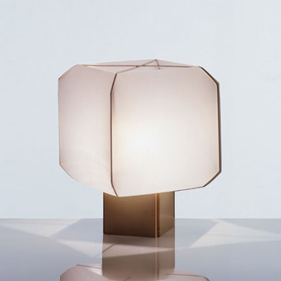

Computational Graphics
FINAL PROJECT
FINAL PROJECT
Bruno Munari (October 24, 1907, Milan – September 30, 1998, Milan) was an Italian artist, designer, and inventor who contributed fundamentals to many fields of visual arts (painting, sculpture, film, industrial design, graphic design) in modernism, futurism, andconcrete art, and in non visual arts (literature, poetry) with his research on games, didactic method, movement, tactile learning,kinesthetic learning, and creativity.
Featuring a diffuser cube shape, the lamp Bali is an object of extreme lightness made from innovative materials and with very good quality light. Project 1958 for Danese, signing Bruno Munari. You set a very simple assembly technique. The base, diamond shaped, is constituted by elements in multilayer light walnut, which are combined with a PVC diffuser made with 4 plates and a structure X easily removable. The final effect is elegant and reminiscent of the oriental paper lanterns. Essential and strictly geometric.
I started my model to build the base and I used the SIMPLEX_GRID function. then I built the bulb with the ROTATIONAL_SURFACE function. for other pieces I used CUBIC_HERMITE and BEZIER function
click here